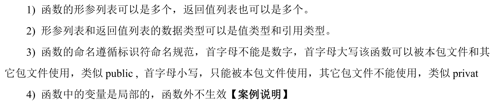

5 函数
底层分析
- 给方法输入，方法返回结果
- 函数-调用过程
- 在调用一个函数时，会给该函数分配一个新的空间，编译器会通过自身的处理让这个新的空间和其它的栈的空间区分开来；
- 在每个函数对应的栈中，数据空间是独立的，不会混淆；
- 当一个函数调用完毕(执行完毕)后，程序会销毁这个函数对应的栈空间。
- return
细节说明
函数类型
函数类型(function types)是一种很特殊的类型，它表示着所有拥有同样的入参类型和返回值类型的函数集合。如下这一行代码，定义了一个名叫 Greeting 的函数类型：
type Greeting func(name string) string
这种类型有两个特征：
- 只接收一个参数 ，并且该参数的类型为 string
- 返回值也只有一个参数，其类型为 string
一个函数只要满足这些特征，那么它就可以通过如下方式将该函数转换成 Greeting 类型的函数对象(也即 greet)
func english(name string) string {
return "Hello, " + name
}
// 转换成 Greeting 类型的函数对象
greet := Greeting(english)
// 或者
var greet Greeting = english
greet 做为 Greeting 类型的对象，也拥有 Greeting 类型的所有方法，比如下面的 say 方法。
func (g Greeting) say(n string) {
fmt.Println(g(n))
}
直接调用并不会报错。
greet.say("World")
package main
import "fmt"
// Greeting function types
type Greeting func(name string) string
func (g Greeting) say(n string) {
fmt.Println(g(n))
}
func english(name string) string {
return "Hello, " + name
}
func main() {
greet := Greeting(english)
greet.say("World")
}
// output: Hello, World
实例练习
package main
import (
"fmt"
"math"
"reflect"
"runtime"
)
func eval(a,b int, op string) (int,error) {
switch op {
case "+":
return a + b,nil
case "-":
return a - b,nil
case "*":
return a * b,nil
case "/":
q,_ := div(a,b)
return q,nil
default:
return 0, fmt.Errorf(
"unsupported operation: %s", op)
}
}
func swap(a, b int)(int, int){
return b, a
}
func div(a,b int)(int, int){
return a / b, a % b
}
func div1(a, b int)(q, r int){
q = a / b
r = a % b
return a / b, a % b
}
func apply(op func(int, int) int , a, b int) int{
//反射获得函数真正的指针
p :=reflect.ValueOf(op).Pointer()
opName := runtime.FuncForPC(p).Name()
fmt.Printf("Calling function %s with args "+ "(%d, %d)", opName, a, b)
return op(a,b)
}
func sum(numbers ...int) int{//函数可以传一个可变的参数列表
s := 0
//注意range的用法
for i:= range numbers{
s += numbers[i]
}
return s
}
func pow(a,b int) int{
return int(math.Pow(float64(a),float64(b)))
}
func main() {
fmt.Println(eval(3,4,"*"))
fmt.Println(div(13,3))
if result, err := eval(3,4,"x");err != nil{
fmt.Println(result)
}
q,r := div1(13,3)
fmt.Println(q,r)
fmt.Println(apply(pow,3,4))
//写一个匿名函数用来调用
fmt.Println(apply(
func(a int,b int) int{
return int(math.Pow(
float64(a),float64(b)))
},3 ,4))
fmt.Println(sum(1,2,3,4,5))
a, b := swap(3,4)
fmt.Println(a, b)
}
更新: 2022-12-01 01:21:50
原文: https://www.yuque.com/xiaoshan_wgo/codingnotes/fsrkn6